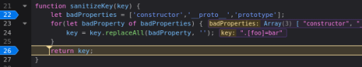

Client-side prototype pollution via flawed sanitization
- Provided with a blog website and told to use prototype pollution to call alert()
- Clicked search button and noticed URL query
- Tried /?__proto__[foo]=bar and /?__proto__.foo=bar as tests
- Entered Object.prototype in Developer Console. It showed no changes
- Checked JavaScript files in Sources section of Debugger
- Located sanitization in searchLoggerFiltered.js:

- Tried inserting additional badProperties into statement to counter sanitization: /?constconstructorructor[protprototypeotype][foo]=bar
- Now the sanitization has been bypassed and Object.prototype returns foo = “bar”
- After further investigation in serachLoggerFiltered.js, discovered config.transport_url is being used without being initialized by default in the config object
- Tried /?consconstructortructor[protprototypeotype][transport_url]=data:,alert(1);
- Alert occured and completed lab successfully: